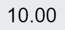
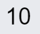

Tag general settings#
In this article, you can find short descriptions of tag general settings.
External data type depends on the input data type. There are the following external data types:
- Integer and array of integer (integer[])
- Float and array of float (float[])
- Boolean and array of boolean (boolean[])
Converter type has three options:
- No data transformation
- Linear numeric transformation
- Multiply numeric transformation
The first option doesn't mean any transformation of the output value.
Important
For boolean types of data the only available option is No data transformation
Linear numeric transformation transforms the value from one scale into another.
Multiply numeric transformation multiplies the value with a custom coefficient. Put the number you need in the Factor field. You can type integer and fractional values.
When active, the Do not remove on tag importing flag prevents the tag from deleting while importing tags. The Do not require commenting on value change option allows users to change the tag's value without leaving records in the commentary field.
Other settings include:
-
Limits
Configure one of three possible options:- None
The system defines operable limits itself. - Range
Define the range of values that available to a user for operations. - Set
Determine particular tag values that user can write to the tag.
- None
Important
The Limits setting limits only the values that users can write to the tag. The tag can take values that have not been set by Limits if it, for example, depends on some external factors.
-
Format string
Set the format of displaying the value in the HMI View. It is relevant for tags of float types. You can define the number of digits after a decimal point. For example, you need two figures to be displayed after a point. There are two ways to set the string:-
0.00
In this case, integer values will be displayed with two zeros after a decimal point. You will see the value displayed like in the picture below:
-
#.##
In this case, integer values will appear on the screen without signs after a decimal point, like in the following image:
Also, you can put the
%sing so values will be formatted as percentage. -
-
Engineeering unit
Defines a unit of measurement to be displayed along with the tag value. The setting is optional.
Parent article:
- IDE overview
An overview of ControlMachines™ HMI project development component.
Related articles:
- Tag history settings
Briefly about History settings menu. - Modbus TCP tag editor
Overview of Modbus TCP tag settings. - BACnet tag editor
Overview of BACnet tag settings. - Z-Wave tag editor
This article is about Z-Wave tags and their parameters which you can change in the editor. - OPC UA tag editor
This article is about OPC UA tags and their parameters which you can change in the editor.